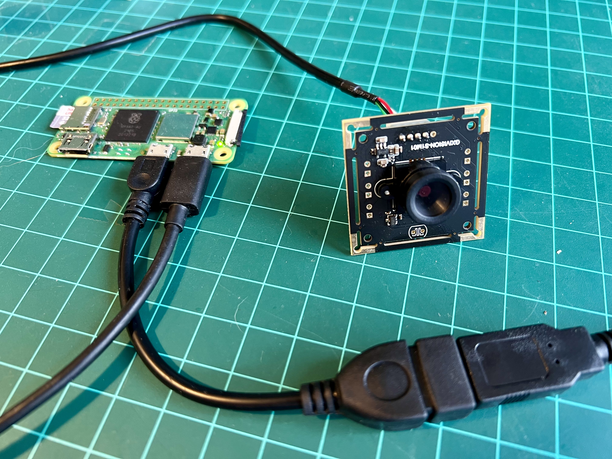
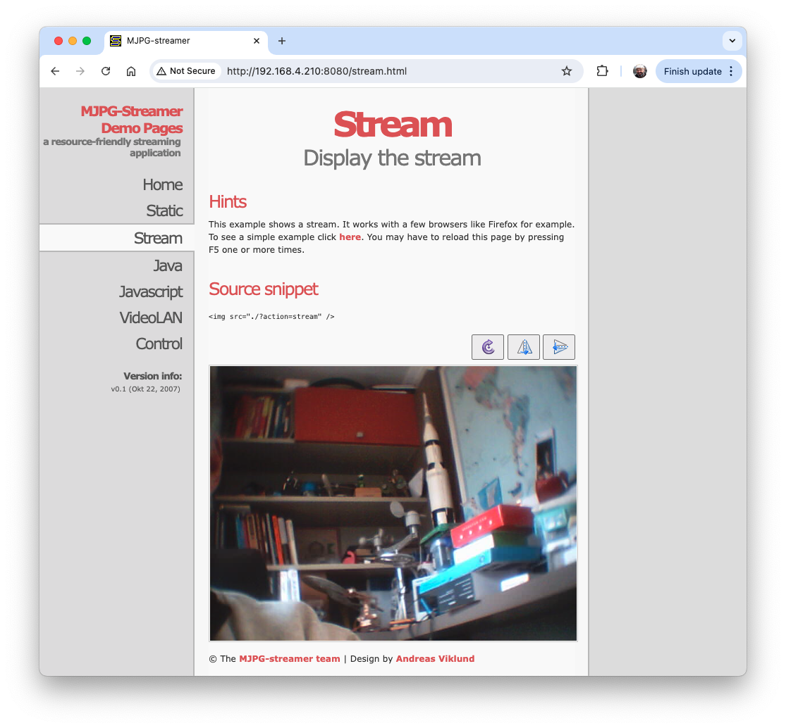
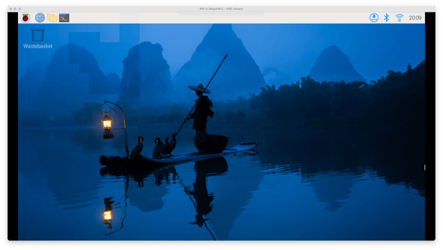

Setup

This chapter will guide you through setting up Raspberry Pi Zero 2 W (Raspi-Zero) and Raspberry Pi 5 (Raspi-5) models. We’ll cover hardware setup, operating system installation, initial configuration, and tests.
The general instructions for the Rasp-5 also apply to the older Raspberry Pi versions, such as the Rasp-3 and Raspi-4.
Introduction
The Raspberry Pi is a powerful and versatile single-board computer that has become an essential tool for engineers across various disciplines. Developed by the Raspberry Pi Foundation, these compact devices offer a unique combination of affordability, computational power, and extensive GPIO (General Purpose Input/Output) capabilities, making them ideal for prototyping, embedded systems development, and advanced engineering projects.
Key Features
Computational Power: Despite their small size, Raspberry Pis offers significant processing capabilities, with the latest models featuring multi-core ARM processors and up to 8GB of RAM.
GPIO Interface: The 40-pin GPIO header allows direct interaction with sensors, actuators, and other electronic components, facilitating hardware-software integration projects.
Extensive Connectivity: Built-in Wi-Fi, Bluetooth, Ethernet, and multiple USB ports enable diverse communication and networking projects.
Low-Level Hardware Access: Raspberry Pis provides access to interfaces like I2C, SPI, and UART, allowing for detailed control and communication with external devices.
Real-Time Capabilities: With proper configuration, Raspberry Pis can be used for soft real-time applications, making them suitable for control systems and signal processing tasks.
Power Efficiency: Low power consumption enables battery-powered and energy-efficient designs, especially in models like the Pi Zero.
Raspberry Pi Models (covered in this book)
- Raspberry Pi Zero 2 W (Raspi-Zero):
- Ideal for: Compact embedded systems
- Key specs: 1GHz single-core CPU (ARM Cortex-A53), 512MB RAM, minimal power consumption
- Raspberry Pi 5 (Raspi-5):
- Ideal for: More demanding applications such as edge computing, computer vision, and edgeAI applications, including LLMs.
- Key specs: 2.4GHz quad-core CPU (ARM Cortex A-76), up to 8GB RAM, PCIe interface for expansions
Engineering Applications
Embedded Systems Design: Develop and prototype embedded systems for real-world applications.
IoT and Networked Devices: Create interconnected devices and explore protocols like MQTT, CoAP, and HTTP/HTTPS.
Control Systems: Implement feedback control loops, PID controllers, and interface with actuators.
Computer Vision and AI: Utilize libraries like OpenCV and TensorFlow Lite for image processing and machine learning at the edge.
Data Acquisition and Analysis: Collect sensor data, perform real-time analysis, and create data logging systems.
Robotics: Build robot controllers, implement motion planning algorithms, and interface with motor drivers.
Signal Processing: Perform real-time signal analysis, filtering, and DSP applications.
Network Security: Set up VPNs, firewalls, and explore network penetration testing.
This tutorial will guide you through setting up the most common Raspberry Pi models, enabling you to start on your machine learning project quickly. We’ll cover hardware setup, operating system installation, and initial configuration, focusing on preparing your Pi for Machine Learning applications.
Hardware Overview
Raspberry Pi Zero 2W

- Processor: 1GHz quad-core 64-bit Arm Cortex-A53 CPU
- RAM: 512MB SDRAM
- Wireless: 2.4GHz 802.11 b/g/n wireless LAN, Bluetooth 4.2, BLE
- Ports: Mini HDMI, micro USB OTG, CSI-2 camera connector
- Power: 5V via micro USB port
Raspberry Pi 5
- Processor:
- Pi 5: Quad-core 64-bit Arm Cortex-A76 CPU @ 2.4GHz
- Pi 4: Quad-core Cortex-A72 (ARM v8) 64-bit SoC @ 1.5GHz
- RAM: 2GB, 4GB, or 8GB options (8GB recommended for AI tasks)
- Wireless: Dual-band 802.11ac wireless, Bluetooth 5.0
- Ports: 2 × micro HDMI ports, 2 × USB 3.0 ports, 2 × USB 2.0 ports, CSI camera port, DSI display port
- Power: 5V DC via USB-C connector (3A)
Installing the Operating System
The Operating System (OS)
An operating system (OS) is fundamental software that manages computer hardware and software resources, providing standard services for computer programs. It is the core software that runs on a computer, acting as an intermediary between hardware and application software. The OS manages the computer’s memory, processes, device drivers, files, and security protocols.
- Key functions:
- Process management: Allocating CPU time to different programs
- Memory management: Allocating and freeing up memory as needed
- File system management: Organizing and keeping track of files and directories
- Device management: Communicating with connected hardware devices
- User interface: Providing a way for users to interact with the computer
- Components:
- Kernel: The core of the OS that manages hardware resources
- Shell: The user interface for interacting with the OS
- File system: Organizes and manages data storage
- Device drivers: Software that allows the OS to communicate with hardware
The Raspberry Pi runs a specialized version of Linux designed for embedded systems. This operating system, typically a variant of Debian called Raspberry Pi OS (formerly Raspbian), is optimized for the Pi’s ARM-based architecture and limited resources.
The latest version of Raspberry Pi OS is based on Debian Bookworm.
Key features:
- Lightweight: Tailored to run efficiently on the Pi’s hardware.
- Versatile: Supports a wide range of applications and programming languages.
- Open-source: Allows for customization and community-driven improvements.
- GPIO support: Enables interaction with sensors and other hardware through the Pi’s pins.
- Regular updates: Continuously improved for performance and security.
Embedded Linux on the Raspberry Pi provides a full-featured operating system in a compact package, making it ideal for projects ranging from simple IoT devices to more complex edge machine-learning applications. Its compatibility with standard Linux tools and libraries makes it a powerful platform for development and experimentation.
Installation
To use the Raspberry Pi, we will need an operating system. By default, Raspberry Pis checks for an operating system on any SD card inserted in the slot, so we should install an operating system using Raspberry Pi Imager.
Raspberry Pi Imager is a tool for downloading and writing images on macOS, Windows, and Linux. It includes many popular operating system images for Raspberry Pi. We will also use the Imager to preconfigure credentials and remote access settings.
Follow the steps to install the OS in your Raspi.
- Download and install the Raspberry Pi Imager on your computer.
- Insert a microSD card into your computer (a 32GB SD card is recommended) .
- Open Raspberry Pi Imager and select your Raspberry Pi model.
- Choose the appropriate operating system:
- For Raspi-Zero: For example, you can select:
Raspberry Pi OS Lite (64-bit).
Due to its reduced SDRAM (512MB), the recommended OS for the Rasp Zero is the 32-bit version. However, to run some machine learning models, such as the YOLOv8 from Ultralitics, we should use the 64-bit version. Although Raspi-Zero can run a desktop, we will choose the LITE version (no Desktop) to reduce the RAM needed for regular operation.
- For Raspi-5: We can select the full 64-bit version, which includes a desktop:
Raspberry Pi OS (64-bit)

- For Raspi-Zero: For example, you can select:
- Select your microSD card as the storage device.
- Click on
Nextand then thegearicon to access advanced options. - Set the hostname, the Raspi username and password, configure WiFi and enable SSH (Very important!)

- Write the image to the microSD card.
In the examples here, we will use different hostnames: raspi, raspi-5, raspi-Zero, etc. You should replace by the one that you are using.
Initial Configuration
- Insert the microSD card into your Raspberry Pi.
- Connect power to boot up the Raspberry Pi.
- Please wait for the initial boot process to complete (it may take a few minutes).
You can find the most common Linux commands to be used with the Raspi here or here.
Remote Access
SSH Access
The easiest way to interact with the Rasp-Zero is via SSH (“Headless”). You can use a Terminal (MAC/Linux), PuTTy (Windows), or any other.
Find your Raspberry Pi’s IP address (for example, check your router).
On your computer, open a terminal and connect via SSH:
ssh username@[raspberry_pi_ip_address]Alternatively, if you do not have the IP address, you can try the following:
shell ssh username@hostname.localfor example,ssh mjrovai@rpi-5.local,ssh mjrovai@raspi.local, etc.
When you see the prompt:
mjrovai@rpi-5:~ $It means that you are interacting remotely with your Raspi. It is a good practice to update/upgrade the system regularly. For that, you should run:
sudo apt-get update sudo apt upgradeYou should confirm the Raspi IP address. On the terminal, you can use:
hostname -I

To shut down the Raspi via terminal:
When you want to turn off your Raspberry Pi, there are better ideas than just pulling the power cord. This is because the Raspi may still be writing data to the SD card, in which case merely powering down may result in data loss or, even worse, a corrupted SD card.
For safety shut down, use the command line:
sudo shutdown -h nowTo avoid possible data loss and SD card corruption, before removing the power, you should wait a few seconds after shutdown for the Raspberry Pi’s LED to stop blinking and go dark. Once the LED goes out, it’s safe to power down.
Transfer Files between the Raspi and a computer
Transferring files between the Raspi and our main computer can be done using a pen drive, directly on the terminal (with scp), or an FTP program over the network.
Using Secure Copy Protocol (scp):
Copy files to your Raspberry Pi
Let’s create a text file on our computer, for example, test.txt.

You can use any text editor. In the same terminal, an option is the
nano.
To copy the file named test.txt from your personal computer to a user’s home folder on your Raspberry Pi, run the following command from the directory containing test.txt, replacing the <username> placeholder with the username you use to log in to your Raspberry Pi and the <pi_ip_address> placeholder with your Raspberry Pi’s IP address:
$ scp test.txt <username>@<pi_ip_address>:~/Note that
~/means that we will move the file to the ROOT of our Raspi. You can choose any folder in your Raspi. But you should create the folder before you runscp, sincescpwon’t create folders automatically.
For example, let’s transfer the file test.txt to the ROOT of my Raspi-zero, which has an IP of 192.168.4.210:
scp test.txt mjrovai@192.168.4.210:~/
I use a different shell profile to differentiate the terminals. The above action happens on your computer. Now, let’s go to our Raspi (using the SSH) and check if the file is there:

Copy files from your Raspberry Pi
To copy a file named test.txt from a user’s home directory on a Raspberry Pi to the current directory on another computer, run the following command on your Host Computer:
$ scp <username>@<pi_ip_address>:myfile.txt .For example:
On the Raspi, let’s create a copy of the file with another name:
cp test.txt test_2.txtAnd on the Host Computer (in my case, a Mac)
scp mjrovai@192.168.4.210:test_2.txt .
Transferring files using FTP
Transferring files using FTP, such as FileZilla FTP Client, is also possible. Follow the instructions, install the program for your Desktop OS, and use the Raspi IP address as the Host. For example:
sftp://192.168.4.210and enter your Raspi username and password. Pressing Quickconnect will open two windows, one for your host computer desktop (right) and another for the Raspi (left).

Increasing SWAP Memory
Using htop, a cross-platform interactive process viewer, you can easily monitor the resources running on your Raspi, such as the list of processes, the running CPUs, and the memory used in real-time. To lunch hop, enter with the command on the terminal:
htop
Regarding memory, among the devices in the Raspberry Pi family, the Raspi-Zero has the smallest amount of SRAM (500MB), compared to a selection of 2GB to 8GB on the Raspis 4 or 5. For any Raspi, it is possible to increase the memory available to the system with “Swap.” Swap memory, also known as swap space, is a technique used in computer operating systems to temporarily store data from RAM (Random Access Memory) on the SD card when the physical RAM is fully utilized. This allows the operating system (OS) to continue running even when RAM is full, which can prevent system crashes or slowdowns.
Swap memory benefits devices with limited RAM, such as the Raspi-Zero. Increasing swap can help run more demanding applications or processes, but it’s essential to balance this with the potential performance impact of frequent disk access.
By default, the Rapi-Zero’s SWAP (Swp) memory is only 100MB, which is very small for running some more complex and demanding Machine Learning applications (for example, YOLO). Let’s increase it to 2MB:
First, turn off swap-file:
sudo dphys-swapfile swapoffNext, you should open and change the file /etc/dphys-swapfile. For that, we will use the nano:
sudo nano /etc/dphys-swapfileSearch for the CONF_SWAPSIZE variable (default is 200) and update it to 2000:
CONF_SWAPSIZE=2000And save the file.
Next, turn on the swapfile again and reboot the Rasp-zero:
sudo dphys-swapfile setup
sudo dphys-swapfile swapon
sudo rebootWhen your device is rebooted (you should enter with the SSH again), you will realize that the maximum swap memory value shown on top is now something near 2GB (in my case, 1.95GB).
To keep the htop running, you should open another terminal window to interact continuously with your Raspi.
Installing a Camera
The Raspi is an excellent device for computer vision applications; a camera is needed for it. We can install a standard USB webcam on the micro-USB port using a USB OTG adapter (Raspi-Zero and Rasp-5) or a camera module connected to the Raspi CSI (Camera Serial Interface) port.
USB Webcams generally have inferior quality to the camera modules that connect to the CSI port. They can also not be controlled using the
raspistillandrasividcommands in the terminal or thepicamerarecording package in Python. Nevertheless, there may be reasons why you want to connect a USB camera to your Raspberry Pi, such as because of the benefit that it is much easier to set up multiple cameras with a single Raspberry Pi, long cables, or simply because you have such a camera on hand.
Installing a USB WebCam
- Power off the Raspi:
sudo shutdown -h no- Connect the USB Webcam (USB Camera Module 30fps,1280x720) to your Raspi (In this example, I am using the Raspi-Zero, but the instructions work for all Raspis).

- Power on again and run the SSH
- To check if your USB camera is recognized, run:
lsusbYou should see your camera listed in the output.

- To take a test picture with your USB camera, use:
fswebcam test_image.jpgThis will save an image named “test_image.jpg” in your current directory.

- Since we are using SSH to connect to our Rapsi, we must transfer the image to our main computer so we can view it. We can use FileZilla or SCP for this:
Open a terminal on your host computer and run:
scp mjrovai@raspi-zero.local:~/test_image.jpg .Replace “mjrovai” with your username and “raspi-zero” with Pi’s hostname.

- If the image quality isn’t satisfactory, you can adjust various settings; for example, define a resolution that is suitable for YOLO (640x640):
fswebcam -r 640x640 --no-banner test_image_yolo.jpgThis captures a higher-resolution image without the default banner.

An ordinary USB Webcam can also be used:

And verified using lsusb

Video Streaming
For stream video (which is more resource-intensive), we can install and use mjpg-streamer:
First, install Git:
sudo apt install gitNow, we should install the necessary dependencies for mjpg-streamer, clone the repository, and proceed with the installation:
sudo apt install cmake libjpeg62-turbo-dev
git clone https://github.com/jacksonliam/mjpg-streamer.git
cd mjpg-streamer/mjpg-streamer-experimental
make
sudo make installThen start the stream with:
mjpg_streamer -i "input_uvc.so" -o "output_http.so -w ./www"We can then access the stream by opening a web browser and navigating to:
http://<your_pi_ip_address>:8080. In my case: http://192.168.4.210:8080
We should see a webpage with options to view the stream. Click on the link that says “Stream” or try accessing:
http://<raspberry_pi_ip_address>:8080/?action=stream
Installing a Camera Module on the CSI port
There are now several Raspberry Pi camera modules. The original 5-megapixel model was releasedin 2013, followed by an 8-megapixel Camera Module 2, released in 2016. The latest camera model is the 12-megapixel Camera Module 3, released in 2023.
The original 5MP camera (Arducam OV5647) is no longer available from Raspberry Pi but can be found from several alternative suppliers. Below is an example of such a camera on a Raspi-Zero.

Here is another example of a v2 Camera Module, which has a Sony IMX219 8-megapixel sensor:

Any camera module will work on the Raspis, but for that, the onfiguration.txt file must be updated:
sudo nano /boot/firmware/config.txtAt the bottom of the file, for example, to use the 5MP Arducam OV5647 camera, add the line:
dtoverlay=ov5647,cam0Or for the v2 module, wich has the 8MP Sony IMX219 camera:
dtoverlay=imx219,cam0Save the file (CTRL+O [ENTER] CRTL+X) and reboot the Raspi:
Sudo rebootAfter the boot, you can see if the camera is listed:
libcamera-hello --list-cameras

libcamerais an open-source software library that supports camera systems directly from the Linux operating system on Arm processors. It minimizes proprietary code running on the Broadcom GPU.
Let’s capture a jpeg image with a resolution of 640 x 480 for testing and save it to a file named test_cli_camera.jpg
rpicam-jpeg --output test_cli_camera.jpg --width 640 --height 480if we want to see the file saved, we should use ls -f, which lists all current directory content in long format. As before, we can use scp to view the image:

Running the Raspi Desktop remotely
While we’ve primarily interacted with the Raspberry Pi using terminal commands via SSH, we can access the whole graphical desktop environment remotely if we have installed the complete Raspberry Pi OS (for example, Raspberry Pi OS (64-bit). This can be particularly useful for tasks that benefit from a visual interface. To enable this functionality, we must set up a VNC (Virtual Network Computing) server on the Raspberry Pi. Here’s how to do it:
Enable the VNC Server:
Connect to your Raspberry Pi via SSH.
Run the Raspberry Pi configuration tool by entering:
sudo raspi-configNavigate to
Interface Optionsusing the arrow keys.

- Select
VNCandYesto enable the VNC server.

- Exit the configuration tool, saving changes when prompted.
Install a VNC Viewer on Your Computer:
- Download and install a VNC viewer application on your main computer. Popular options include RealVNC Viewer, TightVNC, or VNC Viewer by RealVNC. We will install VNC Viewer by RealVNC.
Once installed, you should confirm the Raspi IP address. For example, on the terminal, you can use:
hostname -I
Connect to Your Raspberry Pi:
- Open your VNC viewer application.

- Enter your Raspberry Pi’s IP address and hostname.
- When prompted, enter your Raspberry Pi’s username and password.

The Raspberry Pi 5 Desktop should appear on your computer monitor.

Adjust Display Settings (if needed):
- Once connected, adjust the display resolution for optimal viewing. This can be done through the Raspberry Pi’s desktop settings or by modifying the config.txt file.
- Let’s do it using the desktop settings. Reach the menu (the Raspberry Icon at the left upper corner) and select the best screen definition for your monitor:

Updating and Installing Software
Update your system:
sudo apt update && sudo apt upgrade -yInstall essential software:
sudo apt install python3-pip -yEnable pip for Python projects:
sudo rm /usr/lib/python3.11/EXTERNALLY-MANAGED
Model-Specific Considerations
Raspberry Pi Zero
- Limited processing power, best for lightweight projects
- Use headless setup (SSH) to conserve resources.
- Consider increasing swap space for memory-intensive tasks.
Raspberry Pi 4 or 5
- Suitable for more demanding projects, including AI and machine learning.
- Can run full desktop environment smoothly.
- For Pi 5, consider using an active cooler for temperature management during intensive tasks.
Remember to adjust your project requirements based on the specific Raspberry Pi model you’re using. The Pi Zero is great for low-power, space-constrained projects, while the Pi 4/5 models are better suited for more computationally intensive tasks.